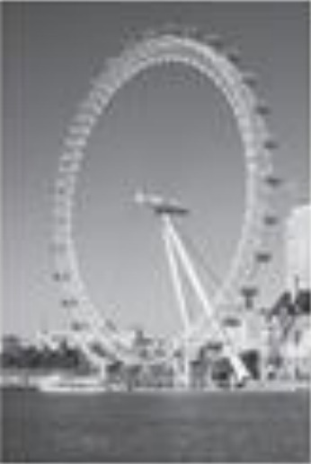

גלגל ענק: קוטר ומרכז
0
שאלה מתוך תוכנית הלימודים
העין של לונדון
בלונדון, לצד נהר התמזה, ניצב גלגל ענק הנקרא העין של לונדון.
הביטו בתצלום ובתרשים שלפניכם.

הקוטר החיצוני של גלגל הענק הוא 140 מטרים, והנקודה הגבוהה ביותר שלו נמצאת בגובה 150 מטרים מעל גובה פני המים של נהר התמזה. החצים מציגים את כיוון הסיבוב של הגלגל.
האות M שבתרשים מציינת את מרכז הגלגל.
בכמה מטרים (מ׳) מעל לפני המים של הנהר נמצאת הנקודה M?
תשובה: מ׳